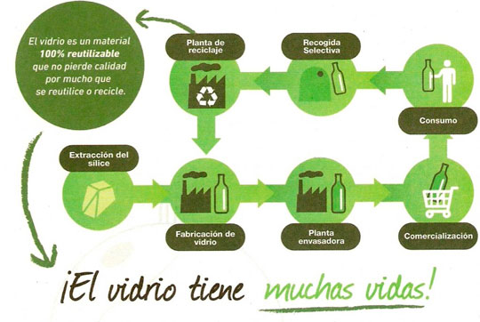
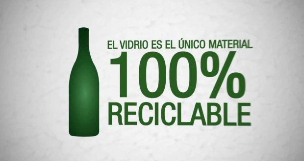
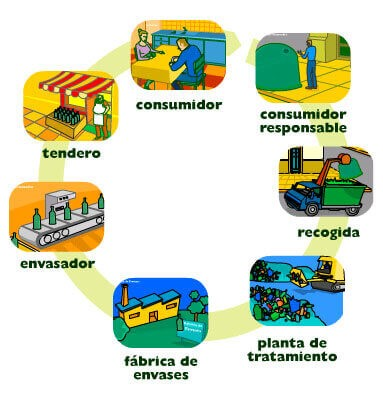

From the Firehose
Vidrio
This blog post shows a few different types of content that’s supported and styled with Bootstrap. Basic typography, images, and code are all supported.


Proceso de reciclaje del vidrio
Este proceso del reciclaje del vidrio, tiene un ciclo circular tal como vemos en la imagen.

- Como vemos, tras el uso de este material, y si lo depositamos en los contenedores verdes, el vidrio pasa por una fase de recogida, para su posterior tratamiento en una planta de reciclaje. Vemos como de esta sencilla forma, hacemos que el vidrio pueda tener muchas más vidas y por tanto generamos una menor cantidad de residuos.
- Como ya hemos dicho, el vidrio no tiene límite en la cantidad de veces que puede ser reciclado, sin perder además calidad, algo que sí pasa por ejemplo en el reciclaje del papel. Se estima que con el proceso de reciclar vidrio, se ahorra un 30% de energía respecto a obtenerlo por primera vez.
Botellas de vidrio
- Una curiosidad sobre el reciclaje de las botellas de vidrio, es que este se separa y clásifica por el color del mismo. Generalmente en tres grupos, verde, ámbar y transparente.
- En algunos casos, las botellas se recuperan por completo, sin tener que reciclar. Únicamente se lavan y se tratan con productos químicos para eliminar cualquier impureza.
- En el caso que el vidrio se deba de tratar, este se tritura y se funde con arena, hidróxido de sodio y caliza para fabricar nuevos productos que tendrán idénticas propiedades.